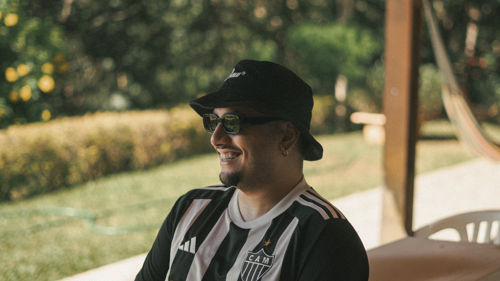
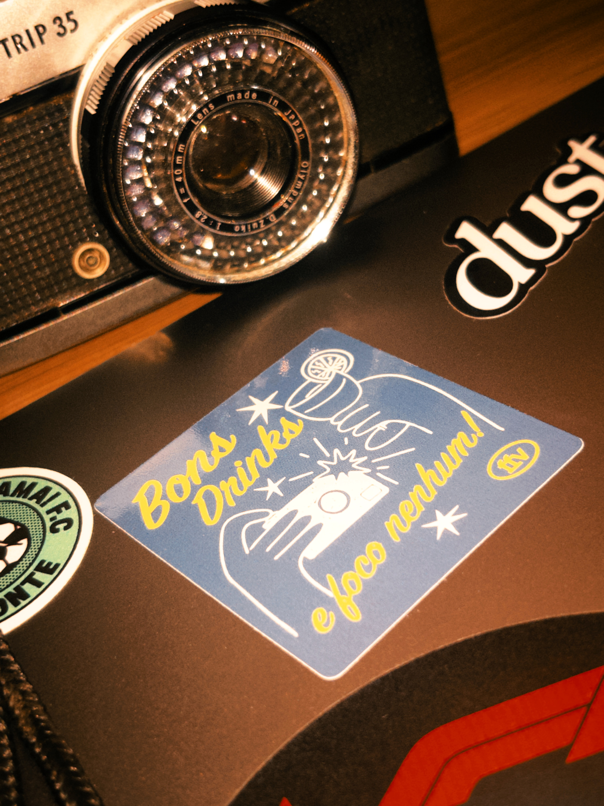
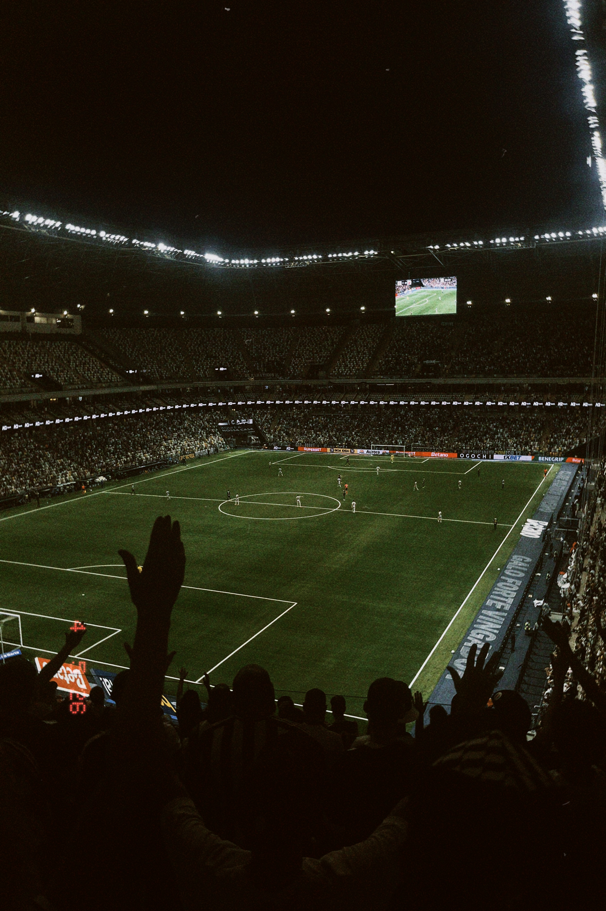
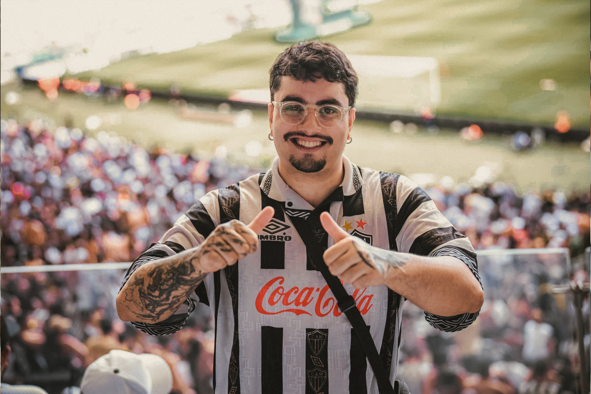

Sou Rafael Mapa, designer focado em interfaces digitais, arquitetura de informação e experiências funcionais.
Sobre mim
Sou designer entre comunicação visual, produto e tecnologia. Hoje trabalho como Designer Gráfico Sênior na Sixtema Marketing, em Belo Horizonte, criando Key Visuals, posts, landing pages e apresentações. Também sou responsável por acompanhar a qualidade visual das entregas do time.
Meu caminho até o design começou no fim do ensino médio. Eu pensava em cursar Matemática, mas uma conversa com meu professor me ajudou a perceber que o design combinava mais comigo. Escolhi essa área na faculdade e a decisão deu certo.
No trabalho, gosto de unir direção de arte e organização. Além de criar, procuro maneiras de estruturar melhor os processos e uso tecnologia, automações e inteligência artificial para apoiar minha rotina. Agora, estudo Product Design e amplio meu repertório sobre produtos digitais.
Fora do trabalho
Tecnologia também ocupa boa parte do meu tempo livre. Gosto de testar ferramentas, ajustar meus dispositivos e entender como as coisas funcionam. Também acompanho futebol, jogo videogame e leio fantasia e ficção científica. São interesses que fazem parte da minha rotina e alimentam minha curiosidade por histórias, mundos e ideias diferentes.



